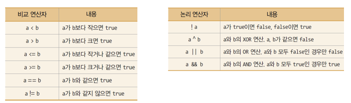

식(Expression)

연산: 주어진 식을 계산하여 결과를 얻어 내는 과정
식(Expression)
연산: 주어진 식을 계산하여 결과를 얻어 내는 과정
산술 연산
public class ArithmeticExpressionTest {
public static void main(String[] args) {
System.out.print("10+3=");
System.out.println(10+3);
System.out.print("5.21+3.1=");
System.out.println(5.21+3.1);
System.out.println("5+3.1="+(5+3.1));
System.out.println("5/2="+(5/2));
System.out.println("5/2.0="+(5/2.0));
}
}/ (나누기), % (나머지) 의 응용
public class ArithmeticExpressionTest {
public static void main(String[] args) {
//...
System.out.println("365의 100의 자리수=" + (365/100));
System.out.println("365의 10의 자리수=" + (365%100)/10);
System.out.println("365의 1의 자리수=" + (365%10));
System.out.println("365 % 2 =" + 365 % 2); //1이면 홀수, 0이면 짝수
System.out.println("366 % 3 =" + 366 % 3); // 0이면 3의 배수,
}
}홀수 여부 판단
int r = n % 2; // r이 1이면 n은 홀수, 0이면 짝수3의 배수인지 여부 판단
int s = n % 3; // s가 0이면 n은 3의 배수
예제
int a, b = 4;
a = b++; // b가 a에 대입된 후 b 증가. 결과 a=4, b=5int a, b = 4;
a = ++b; // b가 증가한 후, b 값이 a에 대입. 실행 결과 a=5, b=5다음 코드의 실행 결과는?
public class AssignmentIncDecOperatorTest {
public static void main(String[] args) {
int a=3, b=3, c=3;
// 대입 연산자 사례
a += 3; // a=a+3 = 6
b *= 3; // b=b*3 = 9
c %= 2; // c=c%2 = 1
System.out.println("a=" + a + ", b=" + b + ", c=" + c);
int d=3;
// 증감 연산자 사례
a = d++; // a=3, d=4
System.out.println("a=" + a + ", d=" + d);
a = ++d; // d=5, a=5
System.out.println("a=" + a + ", d=" + d);
a = d--; // a=5, d=4
System.out.println("a=" + a + ", d=" + d);
a = --d; // d=3, a=3
System.out.println("a=" + a + ", d=" + d);
}
}
예제
// 나이(int age)가 20대인 경우
(age >= 20) && (age < 30)
// 문자(char c)가 대문자인 경우
(c >= 'A') && (c <= 'Z')
// (x,y)가 (0,0)과 (50,50)의 사각형 내에 있는 경우
(x>=0) && (y>=0) && (x<=50) && (y<=50) 다음 소스의 실행 결과는 무엇인가?
public class LogicalOperator {
public static void main (String[] args) {
System.out.println('a' > 'b');
System.out.println(3 >= 2);
System.out.println(-1 < 0);
System.out.println(3.45 <= 2);
System.out.println(3 == 2);
System.out.println(3 != 2);
System.out.println(!(3 != 2));
System.out.println((3 > 2) && (3 > 4));
System.out.println((3 != 2) || (-1 > 0));
System.out.println((3 != 2) ^ (-1 > 0));
}
}